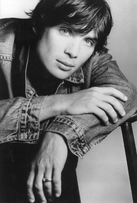
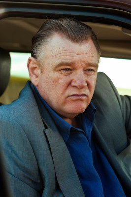
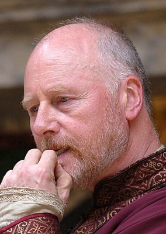
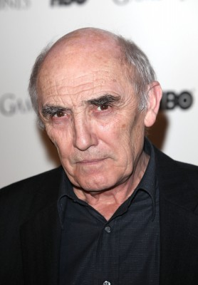
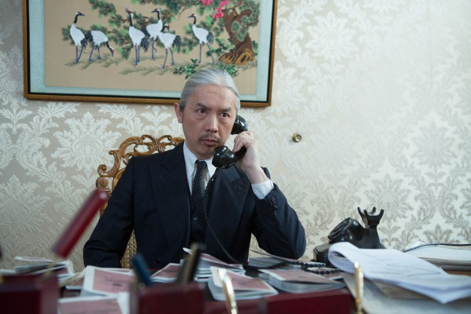
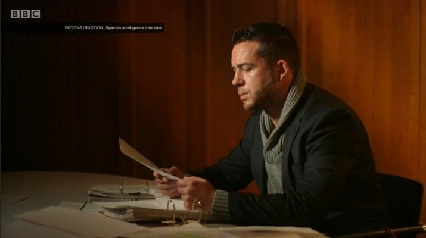

#3362 Im Herzen der See
Alternativ: In the Heart of the Sea

 IMDB-Wertung: 6.9 / 10
IMDB-Wertung: 6.9 / 10  Metascore: 47
Metascore: 47 
1820 wird ein Walfängerschiff, die Essex, von einem riesigen Wal angegriffen. Das Ungewöhnliche daran ist, dass das Tier aus einem bisher nur Menschen zugeschriebenen Vergeltungsdrang angetrieben zu sein scheint. Die Essex entgeht nur knapp dem Untergang und ein großer Teil der Besatzung kommt ums Leben. Doch damit ist der Alptraum noch nicht vorbei, denn nun muss es das Schiff erst einmal wieder ans sichere Ufer schaffen. Die Besatzung, zerrüttet durch den Verlust der Kameraden, steht vor einer schwierigen Aufgabe: Der unerfahrene Kapitän George Pollard versucht, in den tobenden Gewässern einen sicheren Kurs in die Heimat zu bestimmen, während der abgebrühte erste Offizier Owen Chase nur auf Rache gegen den Wal sinnt. 30 Jahre nach den Ereignissen recherchiert Autor Herman Melville das Schicksal der Essex und schreibt ein Buch darüber - den Klassiker "Moby Dick"...
Jahr: 2015
Dauer: 121 Minuten
FSK: 12
Land: USA Studio: Warner Bros.Tonspuren: DTS - ,
Untertitel: Deutsch, Englisch,
Auflösung: 1080p (1920x1080) Größe: 11980 MB
Genre: Action, Thriller, Drama, Abenteuer, Geschichte, Biographie
Regisseur:  Ron Howard
Ron Howard
Drehbuch: Charles Leavitt, Charles Leavitt, Rick Jaffa, Amanda Silver, Nathaniel Philbrick
Soundtrack: Roque Baños
Darsteller:
 Chris Hemsworth als Owen Chase
Chris Hemsworth als Owen Chase- Benjamin Walker als George Pollard
-  Cillian Murphy als Matthew Joy
-  Brendan Gleeson als Tom Nickerson
 Ben Whishaw als Herman Melville
Ben Whishaw als Herman Melville Michelle Fairley als Mrs. Nickerson
Michelle Fairley als Mrs. Nickerson- Tom Holland als Thomas Nickerson
- Paul Anderson als Caleb Chappel
- Frank Dillane als Henry Coffin
- Joseph Mawle als Benjamin Lawrence
- Edward Ashley als Barzillai Ray
- Sam Keeley als Ramsdell
- Osy Ikhile als Richard Peterson
- Gary Beadle als William Bond
- Morgan Chetcuti als Sheppard
- Charlotte Riley als Peggy Chase
-  Nicholas Jones als Pollard Senior
-  Donald Sumpter als Paul Mason
- Richard Bremmer als Benjamin Fuller
- Jordi Mollà als Spanish Captain
- Victor Solé als Harpooner
- Cristhian Esquivel als Quichua Indian Trader
- Andy Wareham als John Sanborn
- Mark Southworth als Francis Easton
- Luca Tosi als Wright
- Martin Wilde als Benjamin Gardner
- Kelly Armstrong als Townsboy , uncredited
- Hayley Joanne Bacon als Nantucket Townswoman , uncredited
- Jill Buchanan als Nantucket Townswoman , uncredited
- Andrew Crayford als Customs Officer , uncredited
- Brooke Dimmock als Phoebe Chase , uncredited
- Alex Gillison als Rich Townsman , uncredited
- Bron James als Quaker , uncredited
- Cristian Lazar als Sailor , uncredited
- Saffron Mcintyre als Nantucket Child , uncredited
- Matthew John Morley als Chandler , uncredited
- Claudia Newman als Nantucket Townswoman , uncredited
-  Clem So als Japanese Sailor , uncredited
- Vassiliki Tzanakou als Nantucket Townswoman , uncredited
-  Daniel Westwood als Nantucket Passenger , uncredited
- Christian Wolf-La'Moy als Quaker Nantucket bank , uncredited
- Jamie Sives als Cole
- Nordin Aoures als First Mate
- Santi López als Second Mate
- Harry Jardine als Rescue Ship Lookout
 Jamie Michie als Rescue Ship Captain
Jamie Michie als Rescue Ship Captain- Frans Huber als Nye, Sailor
- Christopher Keegan als Shareholder
- Stephanie Jacob als Tally Woman
- Kierron Quest als Thomas
Datei: X:\2015(G-M)\Im Herzen der See (2015, FSK12, 1920x1080).mkv seit 24.03.2016
Festplatte: HD 2015(A-Z)
 Es gibt insgesamt 129 Filme in der Gruppe '2015(G-M)'
Es gibt insgesamt 129 Filme in der Gruppe '2015(G-M)'